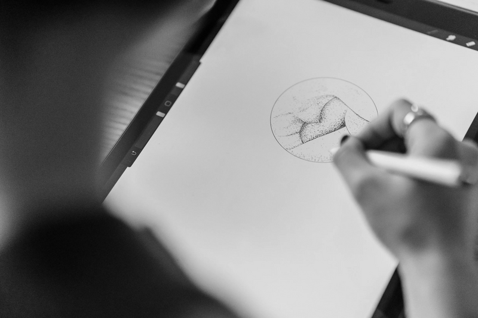
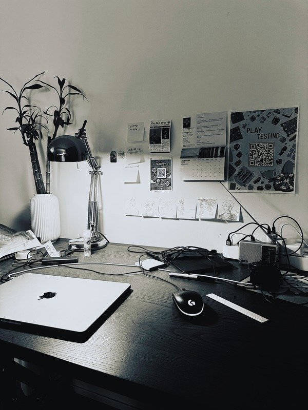
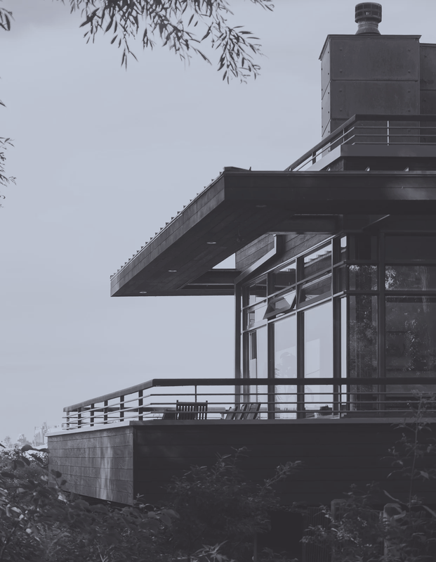
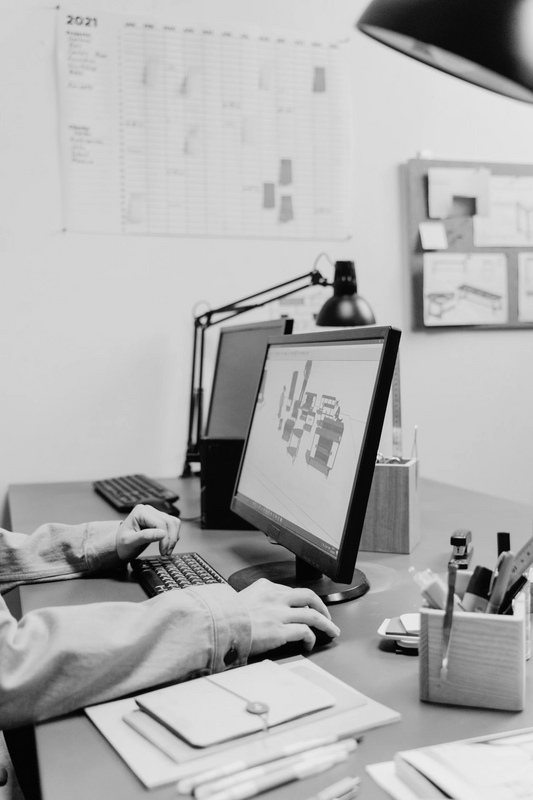

My Story
A Little About Me
Hanwen Zhang (born 2004, Beijing) is an artist specializing in the interaction of digital and physical media. His work often features elements of communication theory and economy, focusing on themes that reflect upon the past. He is currently studying at the University of Toronto Mississauga.
In plain language
I’m Hanwen Zhang, an artist born in Beijing in 2004. I make work with digital tools and physical materials. I use ideas about communication and the economy to look back at the past. I study at the University of Toronto Mississauga.
I was created to create




